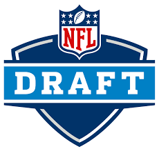

Vamos aprender o básico sobre o Draft da NFL
Comum nos esportes americanos, a seleção universitária começou como forma de equilibrar a liga, gerar competitividade e aumentar a audiência.
O draft é certamente o momento mais importante da offseason - o período de folga da NFL.
O evento nada mais é do que a seleção de atletas universitários por parte dos 32 times da NFL.
História do Evento
A primeira edição do draft da NFL foi em 1936. A temporada anterior foi decisiva para o projeto da criação de um dia para seleção de jogador universitários. Em 1935, o running back Stan Kotska era o principal jogador do futebol americano universitário, com uma carreira espetacular em Minnesota. Todos os times da NFL queriam o corredor. Para maximizar seus ganhos, ele segurou as ofertas por 9 meses e fez leilão até se tornar o jogador mais bem pago da NFL, em 1936, assinando com o Brooklyn Dodgers. Para encerrar leilões do tipo, a NFL criou o draft, com ordem inversa da classificação. A proposta partiu de Bert Bell, dono do Philadelphia Eagles, que tinha dificuldade de assinar com os principais jogadores. Consequentemente seu time não era competitivo e não vendia ingressos.NFL Draft 23
Ao todo, são sete rodadas divididas nos três dias: no primeiro acontece somente a 1ª rodada, no segundo a 2ª e a 3ª e no último dia as rodadas de 4 a 7. Somando tudo, cerca de 250 jogadores são escolhidos a cada temporada. Obviamente, os jogadores selecionados nas primeiras rodadas tendem a ter mais chances e mais talento que os selecionados em rodadas mais baixas. O draft deste ano, 2023, acontece entre quinta-feira, 27 de abril e sábado, 29 de abril.
O link a seguir, mostra o mock draft preparado pelo Charles McDonald's, da ESPN Americana. Veja: